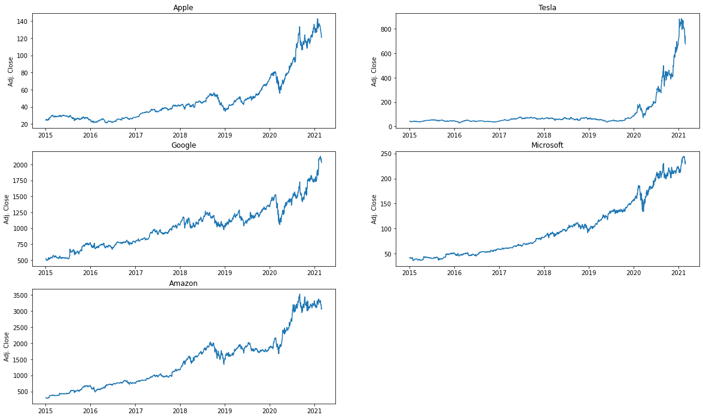
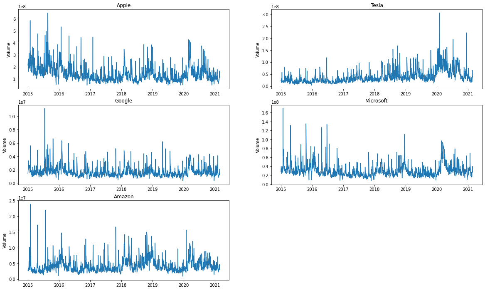
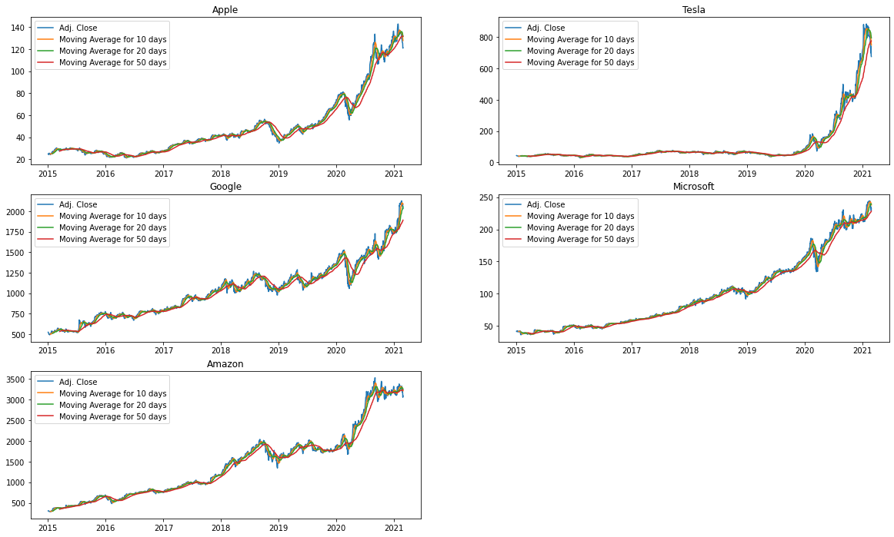
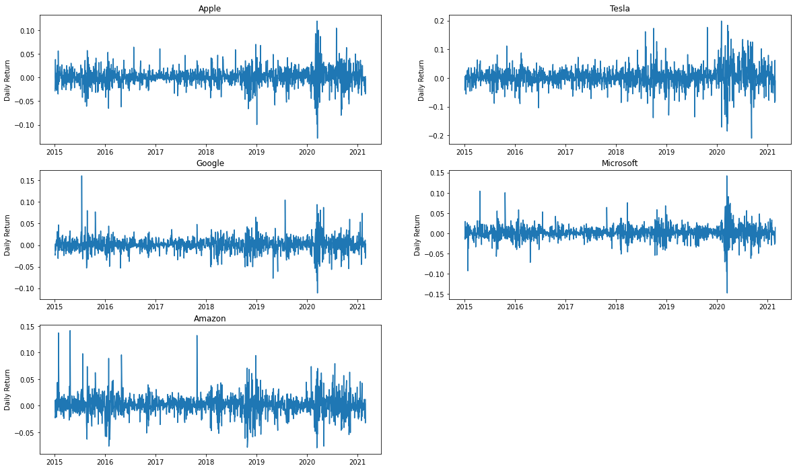
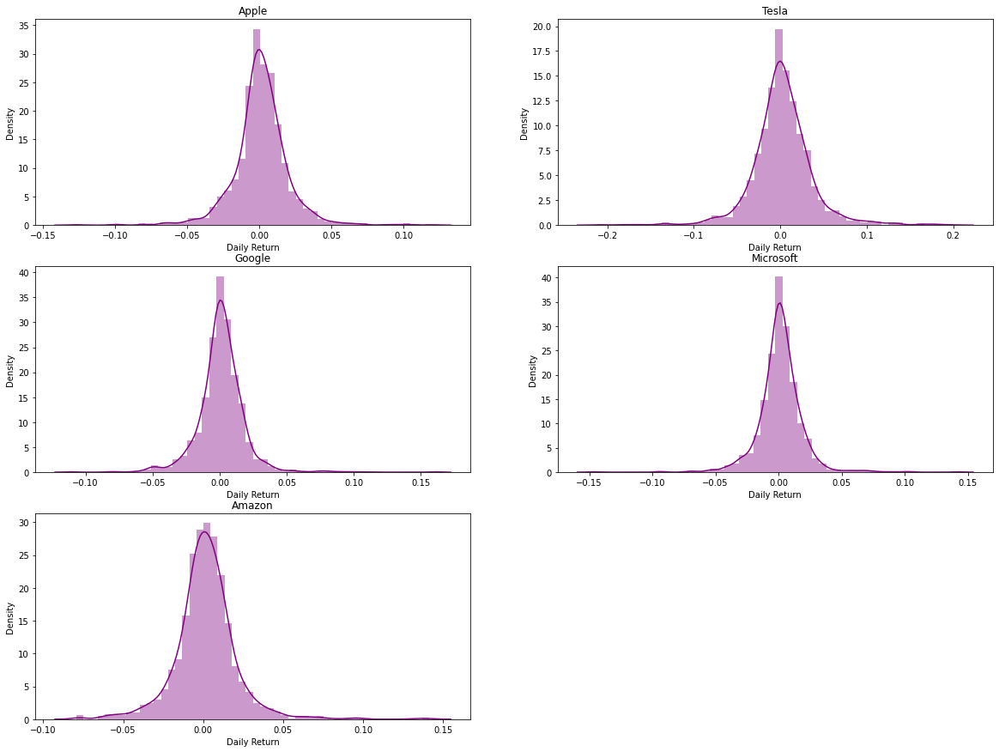
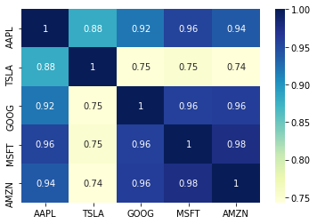
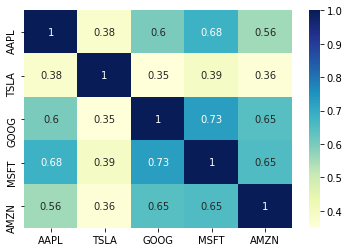
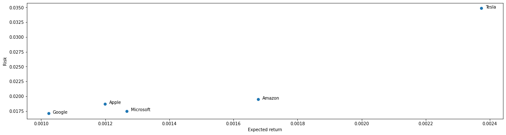

import numpy as np
import pandas as pd
import matplotlib.pyplot as plt
import seaborn as snsIt imports the necessary libraries for data analysis and
visualization: numpy, pandas,
matplotlib.pyplot, and seaborn. These
libraries provide various functions and tools for working with data and
creating plots.
By importing numpy as np, it allows you to
use the functions and data structures provided by the numpy
library using the np prefix. Similarly, pandas
is imported as pd, which allows you to access
pandas functions and data structures using the
pd prefix.
matplotlib.pyplot is imported as plt, which
is a submodule of the matplotlib library. It provides a
convenient interface for creating and customizing plots. Seaborn is
imported as sns, which is a Matplotlib-based data visualization library.
It provides additional functionality and aesthetic enhancements for
creating appealing statistical graphics. In general, it prepares the
environment for data analysis and visualization. Imported libraries can
be used to manipulate data, perform calculations, and create
visualizations.
Loading of data
AAPL = pd.read_csv("/content/drive/MyDrive/Database/AAPL.csv")
TSLA = pd.read_csv("/content/drive/MyDrive/Database/TSLA.csv")
GOOG = pd.read_csv("/content/drive/MyDrive/Database/GOOG.csv")
MSFT = pd.read_csv("/content/drive/MyDrive/Database/MSFT.csv")
AMZN = pd.read_csv("/content/drive/MyDrive/Database/AMZN.csv")Data is read from five separate CSV files: "AAPL.csv", "TSLA.csv", "GOOG.csv", "MSFT.csv", and "AMZN.csv". Each file contains data related to a specific company's stock market information. CSV files are read with pandas's read_csv() function. It takes the file paths as input and returns a pandas DataFrame object, which is a tabular data structure that can store and manipulate data.
By assigning the result of each pd.read_csv() call to a
variable (AAPL, TSLA, GOOG,
MSFT, AMZN), the code creates separate
DataFrames for each company's data. Access and analysis of the data
contained in the respective CSV files can be done using these
DataFrames.
In summary, this code loads data from the CSV files of five different companies (Apple, Tesla, Google, Microsoft, and Amazon) and stores each dataset in a separate DataFrame, enabling further analysis and manipulation of the data.
Apfel
AAPL.head()| Date | Open | High | Low | Close | Adj. Close | Volume | |
|---|---|---|---|---|---|---|---|
| 0 | 26-Feb-2021 | 122.59 | 124.85 | 121.20 | 121.26 | 121.26 | 16,43,20,000 |
| 1 | 25-Feb-2021 | 124.68 | 126.46 | 120.54 | 120.99 | 120.99 | 14,73,06,500 |
| 2 | 24-Feb-2021 | 124.94 | 125.56 | 122.23 | 125.35 | 125.35 | 11,06,91,500 |
| 3 | 23-Feb-2021 | 123.76 | 126.71 | 118.39 | 125.86 | 125.86 | 15,78,59,100 |
| 4 | 22-Feb-2021 | 128.01 | 129.72 | 125.60 | 126.00 | 126.00 | 10,36,07,600 |
It calls the head() function on the DataFrame
AAPL. The head() function is a method provided
by the pandas library and it returns the first few rows of the
DataFrame. AAPL.head() shows a preview of the data stored in the
DataFrame. The default behavior of head() is to return the
first five rows of the DataFrame, providing a glimpse into the structure
and contents of the data.
The purpose of calling head() is to quickly inspect the
initial rows of the DataFrame and get a sense of the data's format,
column names, and values. This can help in understanding the dataset and
making decisions on how to further process, analyze, or visualize the
data. Simply put, AAPL.head() displays a preview of the first few rows
of the AAPL DataFrame.
AAPL.info()<class 'pandas.core.frame.DataFrame'>
RangeIndex: 9800 entries, 0 to 9799
Data columns (total 7 columns):
# Column Non-Null Count Dtype
--- ------ -------------- -----
0 Date 9800 non-null object
1 Open 9800 non-null object
2 High 9725 non-null float64
3 Low 9725 non-null float64
4 Close 9725 non-null float64
5 Adj. Close 9725 non-null float64
6 Volume 9725 non-null object
dtypes: float64(4), object(3)
memory usage: 536.1+ KB
An info() function is called on the DataFrame AAPL. The
info() function is a method provided by the pandas library
and it provides information about the DataFrame's structure and content.
When executed, it displays a summary of the DataFrame. This summary
includes details such as the number of rows and columns, the data types
of each column, and the amount of memory used by the DataFrame. This
function provides information about the dataset. It helps in
understanding the data types of each column (e.g., numeric, string,
datetime), identifying any missing values, and estimating the memory
usage. Using info() can help you explore and clean your data. It allows
you to assess the data's integrity, identify potential issues, and make
informed decisions on how to handle and analyze the dataset.
In summary, AAPL.info() provides a concise summary of
the DataFrame AAPL, including information about its
structure, column data types, and memory usage, which assists in
understanding and preparing the dataset for further analysis.
# Drop NULL rows
AAPL.dropna(inplace = True)This code performs a data operation on the DataFrame
AAPL to remove any rows that contain missing or null
values. The dropna() function is a method provided by the
pandas library for handling missing data.
By executing AAPL.dropna(inplace=True), the code
modifies the DataFrame AAPL in-place by removing any rows
that have null values. The inplace=True parameter ensures
that the changes are applied directly to the DataFrame without creating
a new copy. Dropping null rows cleans up the data and removes incomplete
or unreliable observations. There are many reasons why null values can
occur, such as missing data during data collection or processing errors.
Removing these rows helps to ensure the quality and consistency of the
remaining data. When performing statistical calculations, machine
learning algorithms, or generating visualizations, null rows should be
removed. It ensures that the data being analyzed or visualized is
complete and does not introduce bias or inaccuracies.
In summary, AAPL.dropna(inplace=True) eliminates rows
with null values from the DataFrame AAPL, improving the
data's integrity and preparing it for subsequent analysis or
visualization.
# Change Dtype of Columns
AAPL["Date"] = pd.to_datetime(AAPL["Date"])
AAPL["Volume"] = AAPL["Volume"].str.replace(',', '')
AAPL = AAPL.astype({"Open": float, "Volume": float})Several operations are performed in this code to modify the data
types of specific columns in the DataFrame AAPL. It
utilizes various methods and functions provided by the pandas library.
Parameters such as "pd.to_datetime(AAPL["Date"])" are used to convert
the "Date" column of the DataFrame AAPL into datetime. This
transformation allows for easier manipulation and analysis of dates and
time-related data. AAPL["Volume"].str.replace() modifies the "Volume"
column in the DataFrame AAPL. In the "Volume" column, commas are
replaced with empty strings. This step is commonly used when dealing
with numeric columns that contain comma separators. This alters the
column data type of the "Open" and "Volume" columns in the DataFrame
AAPL to floating-point numbers (float). The
astype() function is used to explicitly specify the desired
data types for specific columns.
By changing the data types of the columns, the code ensures that the columns are stored and processed as the appropriate data types, facilitating calculations, aggregations, and other data operations.
In summary, the code modifies the data types of certain columns in
the DataFrame AAPL. The "Date" column is converted to
datetime format, the "Volume" column is comma-free, and the "Open" and
"Volume" columns are converted to float data types. As a result of these
modifications, data manipulation and analysis are more efficient.
# Sort the Database by Date
AAPL = AAPL.sort_values(by = 'Date', ignore_index = True)This code sorts the DataFrame AAPL based on the values
in the "Date" column. It utilizes the sort_values()
function provided by the pandas library.
By executing
AAPL.sort_values(by='Date', ignore_index=True), the code
rearranges the rows of the DataFrame AAPL so that they are
sorted in ascending order based on the values in the "Date" column.
The by='Date' parameter specifies that the sorting
should be done based on the values in the "Date" column. The
ignore_index=True parameter ensures that the resulting
DataFrame has a new index assigned to the sorted rows, ignoring the
original index values. Various scenarios can be solved by sorting a
database by date. It allows for chronological analysis of the data, such
as tracking changes over time, identifying trends, or comparing
observations at different points in time.
After sorting, the DataFrame AAPL will have its rows
reordered based on the ascending order of the dates in the "Date"
column. This new order of rows can provide a clearer temporal
perspective on the dataset and facilitate subsequent analyses or
visualizations.
In summary,
AAPL = AAPL.sort_values(by='Date', ignore_index=True) sorts
the DataFrame AAPL in ascending order based on the values
in the "Date" column, resulting in a rearranged DataFrame that is
ordered chronologically.
# Drop rows having Date < '2015-01-01'
AAPL = AAPL[AAPL["Date"] >= '2015-01-01'].reset_index(drop = True)This code removes rows from the DataFrame AAPL that have
a date earlier than January 1, 2015. Using the pandas library, the
application uses conditional indexing and DataFrame manipulation
techniques. In the example below, the code creates a new DataFrame
containing only rows with values greater than or equal to '2015-01-01'
in the "Date" column. In other words, it filters out the rows that have
dates before January 1, 2015. The resulting DataFrame will only contain
rows that meet the specified condition. This can be useful when focusing
on a specific time period or when excluding outdated data from the
analysis. In this code, the index of the DataFrame is reset after
filtering. The drop=True parameter ensures that the old
index is not added as a new column in the DataFrame.
//[AAPL]=AAPL[AAPL["Date"] > '2015-01-01'].reset_index(drop=True), as
above. Filtering narrows down the dataset so that it can be analyzed or
visualized based on a specific time range.
AAPL.describe()| Open | High | Low | Close | Adj. Close | Volume | |
|---|---|---|---|---|---|---|
| count | 1549.000000 | 1549.000000 | 1549.000000 | 1549.000000 | 1549.000000 | 1.549000e+03 |
| mean | 50.160265 | 50.700723 | 49.618696 | 50.182447 | 48.781143 | 1.449887e+08 |
| std | 28.029971 | 28.433917 | 27.552589 | 28.007536 | 28.560715 | 7.095025e+07 |
| min | 22.500000 | 22.920000 | 22.370000 | 22.580000 | 21.130000 | 4.544800e+07 |
| 25% | 30.000000 | 30.130000 | 29.810000 | 29.990000 | 27.910000 | 9.667000e+07 |
| 50% | 42.020000 | 42.550000 | 41.630000 | 42.100000 | 40.600000 | 1.272076e+08 |
| 75% | 55.100000 | 55.710000 | 54.370000 | 55.170000 | 53.980000 | 1.731832e+08 |
| max | 143.600000 | 145.090000 | 141.370000 | 143.160000 | 142.950000 | 6.488252e+08 |
This code computes descriptive statistics for the DataFrame
AAPL using the describe() function provided by
the pandas library. For each numerical column in the DataFrame, the code
outputs a summary of statistical measures. It provides information such
as the count (number of non-null values), mean, standard deviation,
minimum value, quartiles (25th, 50th, and 75th percentiles), and maximum
value.
The describe() function helps in gaining a high-level
understanding of the numerical data in the DataFrame. The value
distribution and central tendency of each column can be analyzed by it.
It is possible to identify outliers, determine the range of values,
identify potential issues with the data (e.g., exceptionally high or low
values), and make initial assessments about how distributed the data is.
It computes and displays summary statistics for the numerical columns in
the DataFrame AAPL. Statistical measures provide insight
into the distribution and characteristics of data.
Electra
TSLA.head()| Date | Open | High | Low | Close | Adj. Close | Volume | |
|---|---|---|---|---|---|---|---|
| 0 | 26-Feb-2021 | 700.00 | 706.70 | 659.51 | 675.50 | 675.50 | 4,10,11,300 |
| 1 | 25-Feb-2021 | 726.15 | 737.21 | 670.58 | 682.22 | 682.22 | 3,86,19,900 |
| 2 | 24-Feb-2021 | 711.85 | 745.00 | 694.17 | 742.02 | 742.02 | 3,66,77,100 |
| 3 | 23-Feb-2021 | 662.13 | 713.61 | 619.00 | 698.84 | 698.84 | 6,63,97,000 |
| 4 | 22-Feb-2021 | 762.64 | 768.50 | 710.20 | 714.50 | 714.50 | 3,70,11,700 |
The code calls the head() function on the DataFrame
TSLA. The head() function is a method provided
by the pandas library and it returns the first few rows of the
DataFrame. The function displays a preview of the data in the DataFrame.
The default behavior of head() is to return the first five
rows of the DataFrame, providing a glimpse into the structure and
contents of the data.
The purpose of calling head() is to quickly inspect the
initial rows of the DataFrame and get a sense of the data's format,
column names, and values. This can help in understanding the dataset and
making decisions on how to further process, analyze, or visualize the
data.
In summary, TSLA.head() outputs a preview of the first
few rows of the DataFrame TSLA, allowing for a quick
examination of the data.
TSLA.info()<class 'pandas.core.frame.DataFrame'>
RangeIndex: 2686 entries, 0 to 2685
Data columns (total 7 columns):
# Column Non-Null Count Dtype
--- ------ -------------- -----
0 Date 2686 non-null object
1 Open 2686 non-null object
2 High 2685 non-null float64
3 Low 2685 non-null float64
4 Close 2685 non-null float64
5 Adj. Close 2685 non-null float64
6 Volume 2685 non-null object
dtypes: float64(4), object(3)
memory usage: 147.0+ KB
The dataframe TSLA is called with the info() function. The
info() function is a method provided by the pandas library,
and it provides information about the DataFrame's structure and content.
TSLA.info() displays the summary of TSLA. This summary includes details
such as the number of rows and columns, the data types of each column,
and the amount of memory used by the DataFrame. This function is used to
get a summary of the dataset. It helps in understanding the data types
of each column (e.g., numeric, string, datetime), identifying any
missing values, and estimating the memory usage. It is useful for data
exploration, data cleaning, and memory optimization. It allows you to
assess the data's integrity, identify potential issues, and make
informed decisions on how to handle and analyze the dataset.
In summary, TSLA.info() provides a concise summary of
the DataFrame TSLA, including information about its
structure, column data types, and memory usage. The purpose of this
summary is to assist in understanding and preparing the dataset for
further analysis.
# Drop NULL rows
TSLA.dropna(inplace = True)The code removes all rows with missing or null values from the
DataFrame TSLA. It uses the dropna() function
provided by the pandas library to handle missing data. When the function
is executed, the rows with null values are dropped from the DataFrame
TSLA. The inplace=True parameter ensures that the changes
are applied directly to the DataFrame without creating a new copy.
Dropping null rows cleans the data and removes unreliable observations.
Data collection errors or missing data can result in null values.
Removing these rows helps to ensure the quality and consistency of the
remaining data. Before performing statistical calculations, machine
learning algorithms, or generating visualizations, null rows should
often be removed. It ensures that the data being analyzed or visualized
is complete and does not introduce bias or inaccuracies.
In summary, TSLA.dropna(inplace=True) removes rows with
null values from the DataFrame TSLA, improving the data's
integrity and preparing it for subsequent analysis or visualization.
# Change Dtype of Columns
TSLA["Date"] = pd.to_datetime(TSLA["Date"])
TSLA["Volume"] = TSLA["Volume"].str.replace(',', '')
TSLA = TSLA.astype({"Open": float, "Volume": float})The code in this section changes the data types of specific columns
in the DataFrame TSLA. It uses methods and functions
provided by the pandas library. PDB.to_datetime(TSLA["Date"]) converts
the "Date" column of TSLA into a datetime. This transformation allows
for easier manipulation and analysis of dates and time-related data. In
the second operation, the "Volume" column is modified in the DataFrame
TSLA. An empty string is substituted for any commas within
the "Volume" column. This step is commonly used when dealing with
numeric columns that contain comma separators. The last step changes the
data type of the "Open" and "Volume" columns in the DataFrame
TSLA to floating-point numbers (float). The
astype() function is used to explicitly specify the desired
data types for specific columns.
By changing the data types of the columns, the code ensures that the columns are stored and processed as the appropriate data types, facilitating calculations, aggregations, and other data operations.
In summary, the code modifies the data types of certain columns in
the DataFrame TSLA. Among other things, it converts the
"Date" column to datetime format, removes commas from the "Volume"
column, and converts the "Open" and "Volume" columns to floats. As a
result of these modifications, data manipulation and analysis are more
efficient.
# Sort the Database by Date
TSLA = TSLA.sort_values(by = 'Date', ignore_index = True)It sorts the DataFrame TSLA by the values found in the column "Date".
It uses the sort_values() function provided by the pandas
library.
By executing
TSLA.sort_values(by='Date', ignore_index=True), the code
rearranges the rows of the DataFrame TSLA so that they are
sorted in ascending order based on the values in the "Date" column.
The by='Date' parameter specifies that the sorting
should be done based on the values in the "Date" column. The
ignore_index=True parameter ensures that the resulting
DataFrame has a new index assigned to the sorted rows, ignoring the
original index values. Many scenarios can be solved by sorting the
database by date. It allows for chronological analysis of the data, such
as tracking changes over time, identifying trends, or comparing
observations at different points in time.
After sorting, the DataFrame TSLA will have its rows
reordered based on the ascending order of the dates in the "Date"
column. This new order of rows can provide a clearer temporal
perspective on the dataset and facilitate subsequent analyses or
visualizations.
In summary,
TSLA = TSLA.sort_values(by='Date', ignore_index=True) sorts
the DataFrame TSLA in ascending order based on the values
in the "Date" column, resulting in a rearranged DataFrame that is
ordered chronologically.
# Drop rows having Date < '2015-01-01'
TSLA = TSLA[TSLA["Date"] >= '2015-01-01'].reset_index(drop = True)This code removes rows from the DataFrame TSLA that have
a date earlier than January 1, 2015. With the pandas library,
conditional indexing and DataFrame manipulation are used. When the
"Date" column value is greater than or equal to '2015-01-01', the code
creates a new DataFrame that includes only those rows. In other words,
it filters out the rows that have dates before January 1, 2015. This
effectively removes any data points from earlier dates from the
resulting DataFrame. This can be useful when focusing on a specific time
period or when excluding outdated data from the analysis. It resets the
DataFrame's index after filtering. The drop=True parameter
ensures that the old index is not added as a new column in the
DataFrame.
In summary,
TSLA = TSLA[TSLA["Date"] >= '2015-01-01'].reset_index(drop=True)
updates the DataFrame TSLA by removing rows that have dates
earlier than January 1, 2015. Filtering narrows down the dataset to
focus on a specific time period for analysis or visualization.
TSLA.describe()| Open | High | Low | Close | Adj. Close | Volume | |
|---|---|---|---|---|---|---|
| count | 1549.000000 | 1549.000000 | 1549.000000 | 1549.000000 | 1549.000000 | 1.549000e+03 |
| mean | 110.810891 | 113.270362 | 108.205281 | 110.953628 | 110.953628 | 3.992077e+07 |
| std | 157.089086 | 160.828238 | 152.917803 | 157.395272 | 157.395272 | 2.937944e+07 |
| min | 28.460000 | 30.990000 | 28.210000 | 28.730000 | 28.730000 | 3.540000e+06 |
| 25% | 45.760000 | 46.310000 | 44.990000 | 45.700000 | 45.700000 | 2.127200e+07 |
| 50% | 57.600000 | 59.000000 | 56.560000 | 57.930000 | 57.930000 | 3.079200e+07 |
| 75% | 70.510000 | 71.440000 | 69.250000 | 70.360000 | 70.360000 | 4.735750e+07 |
| max | 891.380000 | 900.400000 | 871.600000 | 883.090000 | 883.090000 | 3.046940e+08 |
This code computes and displays descriptive statistics for the
DataFrame TSLA using the describe() function
provided by the pandas library. The code returns a summary of
statistical measures for each numerical column. It includes statistics
such as counts, means, standard deviations, minimum values, quartiles,
and maximum values.
The purpose of calling describe() is to provide a quick
overview of the distribution and basic statistical properties of the
numerical data in the DataFrame. It helps in understanding the central
tendency, variability, and range of values in each column.
The summary statistics can be useful for identifying outliers, detecting potential issues with the data (e.g., extreme values), and getting a general sense of the dataset's distribution and characteristics.
In summary, TSLA.describe() computes and presents
summary statistics for the numerical columns in the DataFrame
TSLA. Statistics provide insight into the distribution and
characteristics of data.
Analyzing exploratory data
Companies = [AAPL, TSLA, GOOG, MSFT, AMZN]
Companies_Title = ["Apple", "Tesla", "Google", "Microsoft", "Amazon"]The code creates two lists: "Companies" and "Companies_Title".
"Companies" contains references to five different DataFrames: AAPL, TSLA, GOOG, MSFT, and AMZN. Each DataFrame corresponds to the stock market information of a specific company. In the "Companies_Title" list, there are the names of the respective companies: Apple, Tesla, Google, Microsoft, and Amazon. The order of the company names in the "Companies_Title" list corresponds to the order of the DataFrames in the "Companies" list. This makes it convenient to store and access multiple DataFrames. The code allows for easy retrieval and manipulation of the DataFrames and their corresponding titles during subsequent analysis or visualization tasks.
In summary, the code creates two lists: "Companies" and "Companies_Title", which store references to DataFrames representing different companies' stock market data and their corresponding company names, respectively. For further analysis, these lists facilitate the organization and retrieval of data.
# Lets view historical view of the closing prices
plt.figure(figsize=(20, 12))
for index, company in enumerate(Companies):
plt.subplot(3, 2, index + 1)
plt.plot(company["Date"], company["Adj. Close"])
plt.title(Companies_Title[index])
plt.ylabel('Adj. Close')
A visual representation of historical closing prices for a set of
companies is generated using this code. It utilizes the
matplotlib.pyplot library for creating plots. The code specifies the
plot size as 20 units in width and 12 units in height by specifying
plot.figure(figsize=(20, 12)). This ensures that the resulting plot is
large enough to display the historical price data for all companies
clearly. It then loops over each company in the "Companies" list. It
creates a subplot for each company using plt.subplot(3, 2, index + 1).
This arranges the subplots in a grid of 3 rows and 2 columns, with the
index + 1 determining the position of the current subplot. The code
plots each company's historical closing price within each subplot. Using
plt.plot(company["Date"], company["Adj. Close"]) to create
a line plot with the dates on the x-axis and the adjusted closing prices
on the y-axis.
Additionally, the code sets the title of each subplot to the
corresponding company's name using
plt.title(Companies_Title[index]), and it labels the y-axis
as "Adj. Then close it with plt.ylabel('Adj. Close'). Each
subplot shows the historical closing prices of a different company. This
visualization allows for a visual comparison of the closing price trends
over time for the selected companies. To summarize, the code creates a
multi-plot figure to display historical closing prices for multiple
companies. The program generates line plots for each company, arranges
them in a grid, and labels each subplot with the name of that company.
Comparing closing price trends between companies is made easier with
this visualization.
We can see from the above graph that Telsa shares have tremendous growth in the 2020-2021 period. According to the news, this may be due to 1. Sales of emission credits 2. 3. Tesla enters the fast-growing compact SUV market. Starting production in China COVID-19 is the primary factor affecting the 2020-2021 period for the rest of the companies.
# Now lets plot the total volume of stock being traded each day
plt.figure(figsize=(20, 12))
for index, company in enumerate(Companies):
plt.subplot(3, 2, index + 1)
plt.plot(company["Date"], company["Volume"])
plt.title(Companies_Title[index])
plt.ylabel('Volume')
A visual representation of the total volume of stocks traded each day
for a set of companies is generated by this code. It uses the
matplotlib.pyplot library for creating plots. The code specifies that
the figure's size is 20 units in width and 12 units in height. This
ensures that the resulting plot is large enough to display the volume
data for all companies clearly. Next, the "Companies" list is iterated
over. A subplot is created for each company using
plt.subplot(3, 2, index + 1). The code arranges the
subplots in a grid of 3 rows and 2 columns, with the index + 1
determining the position of the current subplot. For each subplot, the
code plots the total volume of stocks traded each day. It uses
plt.plot(company["Date"], company["Volume"]) to create a
line plot with the dates on the x-axis and the volume of stocks traded
on the y-axis.
Additionally, the code sets the title of each subplot to the
corresponding company's name using
plt.title(Companies_Title[index]), and it labels the y-axis
as "Volume" with plt.ylabel('Volume').
The result is a grid of subplots, each displaying the daily total volume of stocks traded for a different company. This visualization allows for a visual comparison of the volume trends over time for the selected companies. Basically, the code displays the total volume of stocks traded each day for multiple companies in a multi-plot. Line plots are generated for each company, arranged in a grid, and labelled with their names. Comparing the volume trends of different companies is made easier with this visualization.
The closing price and volume traded each day have been visualized, so let's calculate the stock's moving average.
What is the moving average of the various stocks?
Moving_Average_Day = [10, 20, 50]
for Moving_Average in Moving_Average_Day:
for company in Companies:
column_name = f'Moving Average for {Moving_Average} days'
company[column_name] = company["Adj. Close"].rolling(Moving_Average).mean()For the "Adj" variable, this code calculates moving averages for a specified number of days. Each DataFrame in the "Companies" list has a "Close" column. A nested loop is used to iterate over a list of moving average values and a list of companies. "Moving_Average_Day" is a list that contains the desired moving average values, such as 10, 20, and 50. Each moving average value in "Moving_Average_Day" is then iterated over in the outer loop. For each moving average value, the inner loop iterates over each company in the "Companies" list. The inner loop calculates the moving average using the rolling().mean() function. The "Adj" variable is affected by this function. Close" column of each company's DataFrame, and it computes the average of the preceding values over the specified number of days. Moving average values are stored in a new column in each company's DataFrame. According to the moving average value, this column is named dynamically, such as "Moving Average for 10 days", "Moving Average for 20 days", etc.
The result is that for each company, new columns are added to their DataFrame, containing the calculated moving average values for the specified number of days. These moving average values can be used to analyze trends and patterns in the stock prices over time. To summarize, moving average values are calculated and added to each company's DataFrame. These averages are computed for the "Adj.". In the newly created columns, they are stored in the "Close" column. As a result, the data can be further analyzed and trends in stock prices can be identified.
plt.figure(figsize=(20, 12))
for index, company in enumerate(Companies):
plt.subplot(3, 2, index + 1)
plt.plot(company["Date"], company["Adj. Close"])
plt.plot(company["Date"], company["Moving Average for 10 days"])
plt.plot(company["Date"], company["Moving Average for 20 days"])
plt.plot(company["Date"], company["Moving Average for 50 days"])
plt.title(Companies_Title[index])
plt.legend(("Adj. Close", "Moving Average for 10 days", "Moving Average for 20 days", "Moving Average for 50 days"))
For a set of companies, this code plots the adjusted closing prices and the moving averages for different number of days. It uses the matplotlib.pyplot library for creating plots. With the plt.figure(figsize=(20, 12))() method, the plot is set to 20 units wide by 12 units high. This ensures that the resulting plot is large enough to display the data for all companies clearly. A loop iterates over each company in the list. In each company, a subplot is created using plt.subplot(3, 2, index + 1). The subplots are arranged in a grid with 3 rows and 2 columns, with the current subplot positioned at index + 1. The code plots multiple lines for different numbers of days to represent the adjusted closing prices and moving average values for each subplot. Using plt.plot(), it creates line plots with dates on the x-axis and the corresponding values on the y-axis. There are four lines, which represent adjusted closing prices, a 10-day moving average, a 20-day moving average, and a 50-day moving average.
Additionally, the code sets the title of each subplot to the
corresponding company's name using
plt.title(Companies_Title[index]). It also adds a legend to
each subplot using plt.legend() to label the different
lines in the plot. This produces a grid of subplots, each displaying the
adjusted closing prices and multiple moving average lines. With this
visualization, you can see how stock prices and moving averages have
changed over time for the selected companies. The code displays the
adjusted closing prices and moving average values for multiple companies
for different numbers of days in a multi-plot figure. The program
creates line plots for each company, arranges them in a grid, and adds
titles and legends. Different companies' stock price trends and moving
average trends can be compared with this visualization.
On average, what was the stock's daily return?
Let's dive a little deeper now that we've done some baseline analysis. The stock's risk will now be analyzed. Rather than just looking at the stock's absolute value, we need to consider the stock's daily changes.
# pct_change() function calculates the percentage change between the current and a prior element.
# This function by default calculates the percentage change from the immediately previous row.
for company in Companies:
company["Daily Return"] = company["Adj. Close"].pct_change()The "Companies" list is used to calculate daily returns for each
company's adjusted closing price. It uses the pct_change()
function provided by the pandas library. Each company in the list is
iterated over. In each company, the pct_change() function is applied to
the "Adj." field. Close" column of the company's DataFrame. By default,
the pct_change() function calculates the percentage difference between
the current element and the previous element. In this case, it
calculates the percentage change between each day's adjusted closing
price and the adjusted closing price of the previous day. For each
company, a column called "Daily Return" is created. This column
represents the percentage change in the adjusted closing price from one
day to the next. A new column containing the daily return values is
added to each company's DataFrame. These values provide insights into
the daily price movements and the rate of return for each company's
stock. To summarize, the code calculates and adds the daily return
values to each DataFrame. Based on the percentage change in adjusted
closing prices, these values are calculated. As a result, it is possible
to analyze the daily price movements and the performance of the stocks
in more detail.
plt.figure(figsize=(20, 12))
for index, company in enumerate(Companies):
plt.subplot(3, 2, index + 1)
plt.plot(company["Date"], company["Daily Return"])
plt.title(Companies_Title[index])
plt.ylabel('Daily Return')
The code generates a plot of daily returns for a set of companies. It
uses the matplotlib.pyplot library for creating plots. As indicated in
the code, the plot size is 20 units wide and 12 units high. This ensures
that the resulting plot is large enough to display the data for all
companies clearly. After that, a loop iterates over each company. Using
plt.subplot(3, 2, index + 1), it creates a subplot for each company.
This arranges the subplots in a grid of 3 rows and 2 columns, with the
index + 1 determining the position of the current subplot. The code
plots the daily returns for each company within each subplot. It uses
plt.plot(company["Date"], company["Daily Return"]) to
create a line plot with the dates on the x-axis and the daily return
values on the y-axis.
Additionally, the code sets the title of each subplot to the
corresponding company's name using
plt.title(Companies_Title[index]), and it labels the y-axis
as "Daily Return" with plt.ylabel('Daily Return').
The result is a grid of subplots, each displaying the daily returns for a different company. This visualization allows for a comparison of the daily performance and volatility of the selected companies' stocks. The code creates a multi-plot figure that displays multiple company returns daily. Line plots for each company are generated, arranged in a grid, and labelled with the company names. In this visualization, you can compare the daily performance and volatility of different stocks of different companies.
Here's a histogram of the average daily return.
# distplot is a deprecated function, so to ignore warnings, the filterwarnings function is used.
import warnings
warnings.filterwarnings('ignore')
plt.figure(figsize=(20, 15))
for index, company in enumerate(Companies):
plt.subplot(3, 2, index + 1)
sns.distplot(company["Daily Return"].dropna(), color = "purple")
plt.title(Companies_Title[index])
For a set of companies, this code generates distribution plots for
their daily returns. It uses the seaborn library's
distplot() function to create the distribution plots. In
order to deal with any warnings associated with the old displot()
method, the code uses the warnings module and the filterwarnings()
method. By calling warnings.filterwarnings('ignore'), the
code instructs the program to ignore any warning messages that may arise
during the execution.
By specifying plt.figure(figsize=(20, 15)), the code
sets the size of the figure, or the overall plot, to 20 units in width
and 15 units in height. This ensures that the resulting plots are large
enough to display the distributions for all companies clearly. In the
loop, each company in the "Companies" list is iterated over. Each
company's subplot is created using plt.subplot(3, 2, index + 1). This
arranges the subplots in a grid of 3 rows and 2 columns, with the index
+ 1 determining the position of the current subplot. The code plots the
distribution of daily returns for each company within each subplot. This
plot uses sns.distplot(company["Daily Return"].dropna(), color="purple")
to create an image that looks like a histogram. The
dropna() function is used to remove any missing values from
the "Daily Return" column before plotting.
Additionally, the code sets the title of each subplot to the
corresponding company's name using
plt.title(Companies_Title[index]).
The result is a grid of subplots, each displaying the distribution
plot for the daily returns of a different company. This visualization
allows for a comparison of the distributions and characteristics of the
daily returns across the selected companies. The code creates a
multi-plot figure that displays the distribution of the daily returns
for multiple companies. This function generates distribution plots using
the deprecated distplot() function from the seaborn
library. As a result, the code ignores any related warnings and arranges
the subplots in a grid with the company names labeled. Different
companies' daily returns can be compared using this visualization.
Kurtosis refers to the difference between the tails of a distribution and the tails of a normal distribution. The kurtosis of a distribution indicates whether its tails contain extreme values.
print("Kurtosis Value")
for index, company in enumerate(Companies):
print(f'{Companies_Title[index]}: {company["Daily Return"].kurtosis()}')Kurtosis Value
Apple: 6.405686938843391
Tesla: 5.764945983385828
Google: 10.086026546409723
Microsoft: 10.603491741447666
Amazon: 7.135284710744968
For a set of companies, this code calculates and prints the kurtosis
values. It uses the kurtosis() function provided by the
pandas library. The code begins by printing the header "Kurtosis Value"
to indicate the information being displayed. After that, a loop iterates
over each company in the "Companies" list. For each company, it
calculates the kurtosis value of the daily returns using
company["Daily Return"].kurtosis(). Kurtosis quantifies the
shape of a distribution. Compared to the normal distribution, it
indicates whether the distribution has a sharp or flat peak. Positive
kurtosis indicates a more peaked distribution with heavier tails, while
negative kurtosis indicates a flatter distribution with lighter tails. A
value of 0 indicates a distribution similar to the normal distribution.
The loop prints the company name along with the kurtosis value using
print(f'[Companies_Title[index]]: [company["Daily
Return"].kurtosis()]'). This displays the kurtosis value for each
company. It prints the kurtosis values for each company's daily returns.
This information provides insights into the shape and characteristics of
the distribution of daily returns for each company's stock. The code
calculates and prints kurtosis values for multiple stocks. The function
iterates over each company, calculates the kurtosis value using the
kurtosis() function, and displays the company name along with the
kurtosis value. Understanding the distribution characteristics of
different companies' daily returns is made easier with this
information.
According to the above graph and the positive kurtosis value, it is rare to get extreme daily return values.
What was the correlation between the closing prices of different stocks?
# Companies_return contain closing price of all the companies
Companies_returns = pd.DataFrame()
Companies_returns["AAPL"] = AAPL["Adj. Close"]
Companies_returns["TSLA"] = TSLA["Adj. Close"]
Companies_returns["GOOG"] = GOOG["Adj. Close"]
Companies_returns["MSFT"] = MSFT["Adj. Close"]
Companies_returns["AMZN"] = AMZN["Adj. Close"]
Companies_returns.head()| AAPL | TSLA | GOOG | MSFT | AMZN | |
|---|---|---|---|---|---|
| 0 | 24.86 | 43.86 | 523.37 | 41.44 | 308.52 |
| 1 | 24.16 | 42.02 | 512.46 | 41.06 | 302.19 |
| 2 | 24.16 | 42.26 | 500.59 | 40.46 | 295.29 |
| 3 | 24.50 | 42.19 | 499.73 | 40.97 | 298.42 |
| 4 | 25.44 | 42.12 | 501.30 | 42.18 | 300.46 |
It creates a DataFrame called "Companies_returns" that contains the adjusted closing prices of multiple companies. The code first creates an empty DataFrame called "Companies_returns" to store the adjusted closing prices of the companies. It then manipulates and combines data from individual DataFrames. After that, the adjusted closing prices of each company are assigned to their respective columns in the "Companies_returns" DataFrame. "Companies_returns" assigns the values from the "Adj" column to the "AAPL" column. The "Close" column in the "AAPL" DataFrame. Each company is repeated, including "TSLA", "GOOG", "MSFT", and "AMZN". The "Companies_returns" DataFrame provides a consolidated view of the closing prices of the selected companies by combining the adjusted closing prices from the individual company DataFrames. In summary, this code creates a "Companies_returns.head()" statement, which displays the first few rows of the "Companies_returns" DataFrame, showing the adjusted closing prices of the companies. "Companies_returns" is a new DataFrame that consolidates the adjusted closing prices of multiple companies. This DataFrame combines the closing prices from individual company DataFrames and displays the first few rows of the consolidated DataFrame. As a result, the closing prices of the selected companies can easily be compared and analyzed.
# Companies_Daily_returns contains percentage daily returns of all the companies
Companies_Daily_returns = Companies_returns.pct_change()
Companies_Daily_returns.head()| AAPL | TSLA | GOOG | MSFT | AMZN | |
|---|---|---|---|---|---|
| 0 | NaN | NaN | NaN | NaN | NaN |
| 1 | -0.028158 | -0.041952 | -0.020846 | -0.009170 | -0.020517 |
| 2 | 0.000000 | 0.005712 | -0.023163 | -0.014613 | -0.022833 |
| 3 | 0.014073 | -0.001656 | -0.001718 | 0.012605 | 0.010600 |
| 4 | 0.038367 | -0.001659 | 0.003142 | 0.029534 | 0.006836 |
DataFrame "Companies_returns" contains the percentage daily returns
for each company. It uses the pct_change() function
provided by the pandas library. It starts by creating a new DataFrame
called "Companies_Daily_returns" to store the calculated percentage
daily returns. It next applies the pct_change() function to
the "Companies_returns" DataFrame. This function calculates the
percentage change between each element and the previous element in the
DataFrame. It uses the Companies_returns DataFrame to calculate
percentage daily returns for each company column. In this case, the
daily rate of change is expressed as a percentage. A head() statement
displays the first few rows of the "Companies_Daily_returns" DataFrame,
which includes the calculated percentage daily returns for each company.
The code calculates and creates a new DataFrame called
"Companies_Daily_returns" that contains the daily percentage returns for
each company in "Companies_returns". This dataframe provides insight
into the daily return patterns of the selected companies using the
pct_change() function.
In order to get actual numerical values for the correlation between the closing prices of the stocks, let's plot a correlation plot
sns.heatmap(Companies_returns.corr(), annot=True, cmap="YlGnBu")<matplotlib.axes._subplots.AxesSubplot at 0x7fc9aca54fd0>
A heatmap plot is generated to visualize the correlation matrix of
the "Companies_returns" DataFrame. It uses the seaborn library's
heatmap() function. It first computes the correlation
coefficients between all pairs of columns in the "Companies_returns"
DataFrame. The resulting correlation matrix represents the relationships
between the closing prices of different companies. This code then
generates a heatmap plot where each cell represents the correlation
between two columns. The intensity of the color in each cell indicates
the strength and direction of the correlation. The
annot=True parameter enables the display of the correlation
values within each cell of the heatmap, providing additional information
about the correlation coefficients. The cmap="YlGnBu"
parameter sets the color map for the heatmap, specifying the color
gradient to be used. The resulting heatmap visually represents the
correlation matrix, allowing for a quick overview of the relationships
Different companies' closing prices. In general, positive correlations
are represented by brighter colors, indicating a direct relationship,
while negative correlations are represented by darker colors, indicating
an inverse relationship. This code visualizes the correlation matrix of
closing prices of different companies in the "Companies_returns"
DataFrame using a heatmap plot. This heatmap shows the relationships and
dependencies between the stock prices of selected companies.
Let's do a correlation plot to get actual numerical values for the correlation between the stocks' daily returns.
sns.heatmap(Companies_Daily_returns.corr(), annot=True, cmap="YlGnBu")<matplotlib.axes._subplots.AxesSubplot at 0x7fc9a4173650>
To visualize the correlation matrix of the "Companies_Daily_returns"
DataFrame, this code generates a heatmap plot. It uses the seaborn
library's heatmap() function. It first calls
Companies_Daily_Returns.corr() to compute correlation coefficients
between all pairs of columns in the "Companies_Daily_Returns" DataFrame.
The resulting correlation matrix represents the relationships between
the percentage daily returns of different companies. The code generates
a heatmap plot with each cell representing the correlation between two
columns. The intensity of the color in each cell indicates the strength
and direction of the correlation. The annot=True parameter
enables the display of the correlation values within each cell of the
heatmap, providing additional information about the correlation
coefficients. The cmap="YlGnBu" parameter sets the color
map for the heatmap, specifying the color gradient to be used. The
resulting heatmap visually represents the correlation matrix, allowing
for a quick overview of the relationships Different companies have
different percentage daily returns. A positive correlation is typically
represented by brighter colors, indicating a direct relationship,
whereas a negative correlation is represented by darker colors,
indicating an inverse relationship. To visualize the correlation matrix
of percentage daily returns of different companies in the
"Companies_Daily_returns" DataFrame, this code generates a heatmap plot.
This heatmap illustrates the relationships and dependencies between the
daily return patterns of the selected companies.
Microsoft and Google had the strongest correlation in stock returns, based on the above plot.
By investing in a particular stock, how much value are we putting at risk?
By comparing the expected return with the standard deviation of the daily returns, we can quantify risk using the information we have gathered on daily percentage returns.
Returns = Companies_Daily_returns.dropna()
plt.figure(figsize=(20, 5))
plt.scatter(Returns.mean(), Returns.std())
plt.xlabel('Expected return')
plt.ylabel('Risk')
for label, x, y in zip(Companies_Title, Returns.mean(), Returns.std()):
plt.annotate(label, xy = (x, y), xytext = (10, 0), textcoords = 'offset points')
The code generates a scatter plot to visualize the relationship between expected return and risk. It uses the matplotlib.pyplot library for creating the scatter plot. It first drops any rows with missing values from the "Companies_Daily_returns" DataFrame. This ensures that the data used for the scatter plot is complete. The code specifies that the figure, or the overall plot, is 20 units wide and 5 units high. This ensures that the resulting scatter plot is large enough to display the data clearly. The scatter plot is then plotted using plt.scatter(Returns.mean(), Returns.std()). The x-coordinates are the mean values of the returns and the y-coordinates are the standard deviation values. On a scatter plot, each point represents a company, and its position indicates how the expected return relates to the risk for that company.
Additionally, the code sets the x-axis label as "Expected return"
with plt.xlabel('Expected return') and the y-axis label as
"Risk" with plt.ylabel('Risk'). This provides clear labels
for the scatter plot axes. Moreover, each point on the scatter plot is
annotated with the company name via a loop. In addition to adding text
labels to each scatter plot point, it iterates over the company names,
the mean values, and the standard deviation values. A scatter plot is
generated which illustrates the correlation between the expected return
and risk for the selected companies. Companies with different
risk-return profiles can be identified and insights into the trade-off
between risk and expected return can be gained. For multiple companies,
the code generates a scatter plot to visualize the relationship between
return and risk. It plots the mean and standard deviation of the
returns, labels the axes, and annotates each point with the name of the
company. The visualization helps analyze different companies' risk and
return characteristics.
According to the above graph, Tesla has the highest expected returns and the highest risk factor. The lowest expected returns and the lowest risk factor are associated with Google.